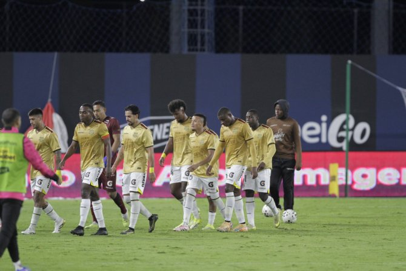

César Farías vuelve a enfrentar a Aucas, el club con el que fue campeón en 2022, en medio de fuertes críticas por el rendimiento de Barcelona SC
César Farías, entrenador de Barcelona, se enfrenta este sábado 16 de mayo desde las 19:00 a Aucas (equipo con el que llegó a la gloria en la LigaPro en 2022), en un juego de mucha presión para el criticado técnico venezolano y para los amarillos. El partido va por la señal de Zapping Sport.
Precisamente el DT llanero fue el que dejó sin título al Ídolo, pero su último paso por el Monumental, el 7 de mayo de 2023, no es el que más recuerda, ya que el Papá cayó goleado 5-1. De aquella alineación de los locales, ahora solo queda el defensa Luca Sosa.
Farías, tras 13 fechas del campeonato nacional y cuatro de la fase de grupos de la Copa Libertadores, ha generado muchas dudas en los hinchas. El fútbol de Barcelona no convence y los cuestionamientos son cada vez son más fuertes.
Roberto Ordóñez, quien fue campeón en Aucas con Farías, en diálogo con EXTRA comentó que “el ‘profe’ César ha de estar caliente porque no le salen las cosas con el equipo. El tipo es un ganador, eso no está en duda”.

El actual delantero del Deportivo Quito, quien contó que mantiene contacto con el estratega venezolano, resaltó que “no creo que se sienta presionado el profesor por este partido. Para él, ahora es una emoción poder enfrentar a Aucas”.